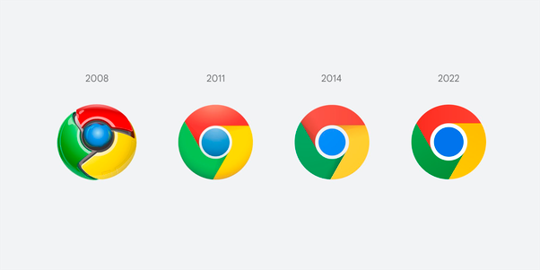

Google Chrome
Origem:
Com o google vendo o sucesso dos navegadores como Internet Explorer e Mozilla Firefox,
o Google Chrome teve seu desenvolvimento iniciado em no final de 2006, tendo sua
devida versão beta em setembro de 2008.
Diferencial Competitivo: Chrome chegou prometendo um visual limpo e organizado,
mais desempenho com o JavaScript, Tendo como os outros navegadores um modo de navegação privada.
Superando o Firefox e Explorer: Fruto de uma parceria entre Google e a Fundação Mozilla em 2004, O Mozilla Firefox
competia firmemente contra o Internet Explorer da empresa Microsoft pelo título de maior
navegador porém, a partir do início da década de 2010 o Google Chrome já estava numa ascendente,
ocupando boa parte do mercado mesmo com pouco tempo de existência, superando o número de usuários
do Firefox no ano de 2011, superando também o Internet Explorer em 2012 para assim criar uma soberania
no cenário mercadológico que se estende até os dias atuais.
Dias Atuais: Hoje o Google praticamente monopolizou o mercado de navegadores ocupando quase 70% do browser
market share, o que comprova a sua dominância em relação aos concorrentes.
o Google Chrome teve seu desenvolvimento iniciado em no final de 2006, tendo sua
devida versão beta em setembro de 2008.
Diferencial Competitivo: Chrome chegou prometendo um visual limpo e organizado,
mais desempenho com o JavaScript, Tendo como os outros navegadores um modo de navegação privada.
Superando o Firefox e Explorer: Fruto de uma parceria entre Google e a Fundação Mozilla em 2004, O Mozilla Firefox
competia firmemente contra o Internet Explorer da empresa Microsoft pelo título de maior
navegador porém, a partir do início da década de 2010 o Google Chrome já estava numa ascendente,
ocupando boa parte do mercado mesmo com pouco tempo de existência, superando o número de usuários
do Firefox no ano de 2011, superando também o Internet Explorer em 2012 para assim criar uma soberania
no cenário mercadológico que se estende até os dias atuais.
Dias Atuais: Hoje o Google praticamente monopolizou o mercado de navegadores ocupando quase 70% do browser
market share, o que comprova a sua dominância em relação aos concorrentes.
